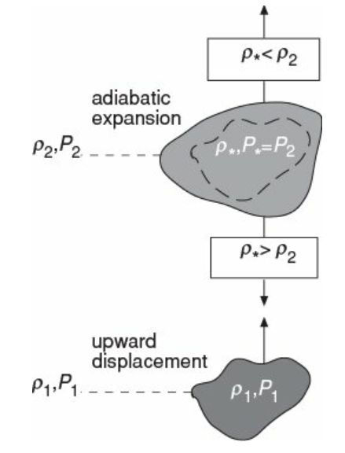
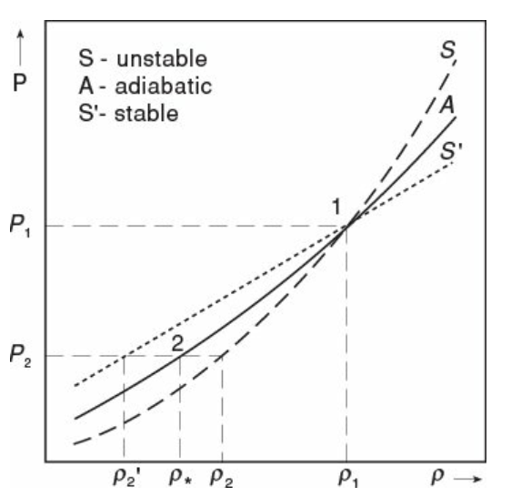

平衡态按二阶导数分为稳定平衡、不稳定平衡、随遇平衡
恒星处于热平衡、流体静力学平衡。稳定平衡的恒星受热扰动、动力学扰动，应该可以回到平衡态。
长期热稳定性
2.4节（维里定理）里推出过
而
从而
$E=U_\mathrm{gas}+U_\mathrm{rad}+\Omega=-U_\mathrm{gas}<0$，系统处于束缚态。
定义等效引力势能$\Omega_\mathrm{eff}=\Omega+U_\mathrm{rad}$，能保留维里定理的形式$2U_\mathrm{gas}+\Omega_\mathrm{eff}=0$。
恒星收缩时，$|\Omega_\mathrm{eff}|$增大，即$U_\mathrm{gas}$增大，恒星温度升高（释放的引力势能用来加热恒星气体）。
恒星总能的变化率
在平衡态上，$L_\mathrm{nuc}=L,E=\mathrm{const}$。
设系统受扰动略微偏离平衡态，使$L_\mathrm{nuc}>L$，此时$\dot{E}>0$，$|E|$减小，从而$|\Omega_\mathrm{eff}|$减小，恒星膨胀，温度降低，导致核产能率降低，回到原平衡态。从而即使恒星有很多短时标的不稳定性，其在长时标上还是稳定的。
热不稳定性
简并气体的不稳定性
多方球模型中
($C_1$为常数)。求对数并取全微分，
一般地,气体状态方程$P = C_3\rho^aT^b$，有：
对比(2.1)和(2.2)，有
分析下面两种情况：
- 若核区为理想气体，即$a=b=1$，(2.3)给出若引力不稳定性导致核区稍微收缩，$\rho_c$增大，则$T_c$增大，从而$q$迅速增大，产生大量热量，使辐射压增大，又导致核区膨胀，从而可以维持稳定。
- 若核区为简并电子气，非相对论性的和相对论性的物态方程分别为其中$0 < b \ll 1$。
这两种物态方程都有$a \ge 4/3$，即密度减小时温度增大。当核区等离子体不稳定性使$L_\mathrm{nuc} > L$时，辐射压增大导致核区膨胀，$\rho_c$减小，而$T_c$将增大，使$q$进一步增大，核区将会持续膨胀，偏离平衡态，这一过程称为runaway。
若膨胀到一定程度使密度减小到解除简并态，核区重新成为稳定的理想气体，这一特例下runaway可以被避免。
薄壳不稳定性
考虑半径$r_0\sim r$处，厚$\ell=r-r_0$，质量$\Delta m$的薄壳，$\ell\ll R$，认为这一薄壳中温度、密度均匀，近似处于热平衡态。
由流体静力学平衡条件，薄壳中的总压力即为$r$内的物质对$r\sim R$的质量为$\Delta \tilde{m}$的壳层的自引力，而压强是各向同性的，从而
即
质量$\Delta m=\rho(r)(4\pi r^2\ell)$保持不变时，有$\rho\sim\ell^{-1}$，即
即
从而
联立(2.2)式，
同简并气体不稳定性的分析，壳层热扰动下能维持平衡的条件是$4\frac{\ell}{r}>a$。远离核区的气体近似为理想气体，稳定条件即$4\frac{\ell}{r}>1$。而薄壳$\ell\ll r$，因此薄壳在热扰动下是不稳定的。
白矮星表面上会残留没燃烧的氢，若经历热扰动，表面亮度会急剧增加，形成核闪耀，使本不可见的白矮星变得可见，观测上称为新星。
最后需要说明的是，上面的讨论中没有考虑温度的变化也会导致光度$L$的变化。如果恒星壳层的膨胀导致温度升高，但同时光度也升高使$L_\mathrm{nuc} < L$，此时壳层也会失去能量而收缩，使其不至于runaway。不过事实上$L\sim T^4$，而相比之下$q$对温度要敏感的多，因此忽略$L$的变化也是合理的。
动力学稳定性
恒星$r$处压强产生各向同性扰动$\delta P$，收缩至半径$r’$。若收缩后还能向外膨胀恢复到原来的位置，则认为系统是动力学稳定的。
令
$0<\epsilon\ll 1$。
由质量连续性方程，
设压缩过程为绝热的（忽略辐射冷却，也忽略辐射压），绝热指数$\gamma_a$。气体的物态方程为$PV^{\gamma_a}=\mathrm{const}$，即$P\rho^{-\gamma_a}=\mathrm{const}$。从而有
另一方面，$r’$处自引力产生的压强为
若要使壳层能膨胀会原来的状态，应有$P’>P_h’$，即
这一条件需要在恒星中任何位置都成立，称为动力学稳定（强）判据。
强判据成立意味着系统是动力学稳定的，但只有部分区域的$\gamma_a<4/3$是否就意味着动力学不稳定还需要进一步考虑。整体的动力学稳定性取决于动力学积分：
$I_\mathrm{dyn}<0$时系统是动力学不稳定的。
- 若$\gamma_a<4/3$在核区较大范围内成立，由于中心部分$P/\rho$较大，$I_\mathrm{dyn}<0$，系统动力学不稳定。
- 若$\gamma_a<4/3$仅在表面附近的壳层成立，这一区域对应$P/\rho$很小，因此积分由内部区域主导，$I_\mathrm{dyn}>0$，系统是动力学稳定的。
动力学不稳定性的例子
- 相对论性简并电子气
$n=3,\gamma_a=4/3$。系统为白矮星，$M\rightarrow M_\mathrm{ch}$。
若吸附质量$\delta M$使$M+\delta M>M_\mathrm{ch}$，此时简并压不足以抵抗引力，星体将进行引力塌缩，白矮星结构破坏，因此是动力学不稳定的。 - 辐射压主导
非相对论性气体$n=3/2,\gamma_a=5/3$
相对论性气体和辐射$n=3,\gamma=4/3$
因此辐射主导的恒星是动力学不稳定的。
另一方面，对辐射，$u_\mathrm{rad}=3P/\rho$，从而
即辐射压主导的恒星的$E=U+\Omega\approx 0$，即系统是非束缚的。也能说明系统是动力学不稳定的。
部分电离
考虑部分电离的气体，满足Saha方程
物态方程为理想气体物态方程。
若气体受动力学扰动被压缩，分为两个过程：
第一步$(V,P,N)\rightarrow(V’,P’,N)$。令粒子数不变，体积减小导致压强增大，从而$x$减小（复合增强）。
第二步$(V’,P’,N)\rightarrow(V’,P’’,N’)$，令体积不变，上一步复合增强导致$N’ < N$，从而$P’’ < P’$。认为压缩过程满足绝热物态方程，$P=k_a\rho^{\gamma_a}$，复合过程不改变密度，则有$\gamma_a’’ < \gamma_a’$。有可能$\gamma_a’’ < 4/3$，导致动力学不稳定。
3.6节中给出过：
- 对完全中性和完全电离气体，都有$\gamma_a=5/3$
- 对部分电离气体：
- 取$kT\approx \chi=13.6\mathrm{eV}$，当$18\% < x < 82\%$时$\gamma_a < 4/3$
- 取$kT\approx \chi/10$（低温），当$5\% < x < 95\%$时$\gamma_a < 4/3$
讨论：
- 在恒星内核，温度足够高，$\mathrm{H},\mathrm{He}$几乎完全电离，$x=1$。从而核区是动力学稳定的。
- 在外围壳层，温度较低，$x<1$，一般$\gamma_a<4/3$，但$P/\rho$也较小，从而整个恒星的动力学积分$I_\mathrm{dyn}>0$，整个系统仍是动力学稳定的。
- 极高温的内核发生光致解离效应，对恒星稳定性的影响不可忽略
对流不稳定性
对流的物理图像：恒星内部壳层温度较高，密度小；外部温度较低，密度大；导致气体在恒星自引力场中循环流动，形成对流。
对流的效果：
- 高效率传热，辐射传热的重要补充
- 将内外物质搅拌均匀，使恒星中各元素化学丰度近似形成均匀分布
流体静力学平衡有
而
若$\kappa F$足够大，即$\left|\frac{\mathrm{d} T}{\mathrm{d} m}\right|$足够大，可以形成强对流，此时可能有$\kappa F>4\pi cGm$，流体静力学平衡被打破。
对流产生的条件

如图，假如温度、压强为$(\rho_1,P_1)$的气体团块上浮一小段距离到密度、压强为$(\rho_2,P_2)$的壳层处，由于$P_1 > P_2$，这一团块将会膨胀直到和环境压强平衡，即$P_{*}=P_2$。考虑恒星中的动力学时标远小于热力学时标，这一膨胀过程可以近似看为绝热的。绝热膨胀导致密度减小，如果密度比当前壳层的密度$\rho_2$大则下沉，此时是对流稳定的；否则气体团块将继续上浮，直到上升到$r_\mathrm{out}$处，绝热膨胀后的密度大于环境密度。这种情况下是对流不稳定的，$r_\mathrm{out}$即为对流区的外边界。一般$r_\mathrm{out} \ll R$。

如图，若环境为S构型，绝热膨胀的$\rho_{*}<\rho_2$，从而质元上浮，对流区将不断发展，系统对流不稳定；若环境为S’构型，绝热膨胀的$ \rho_{*}<\rho_2’$，质元下沉，系统对流稳定。
对流稳定的条件可以写为：
由多方过程的物态方程
有
对绝热过程$\gamma=\gamma_a$。达到平衡后$P$相等，$\rho_a>\rho_\mathrm{star}$，从而对流稳定的条件也可以写为
对恒星中的理想气体，
从而
从而对流稳定性条件成为
或者
对流不稳定性的例子
将热平衡方程和流体静力学平衡方程代入对流稳定性判据，得到
$右边\le 4\pi cGm$，等号在$\beta=0$时取得。
说明流体静力学平衡被打破之前，对流就可能发生。处于流体静力学平衡的恒星内部一部分壳层也可能存在对流区，与（太阳）观测一致。
具体情况：
- 部分电离区域（如恒星外围温度较低的区域），$\kappa$较大而$\gamma_a$较小，容易出现对流
- 核区附近$\mathrm{H,He}$完全电离，$\kappa$几乎为常量，若磁流体不稳定性使核反应增强，$F$增大，可能出现对流
- 在核区$q\propto T^n$，若$n$增大（如氢烧变成氦烧），也可能导致对流不稳定
Cowling的计算结果，- 若$\kappa\sim\mathrm{const}$，$n>3-4$时出现对流
- 若$\kappa\sim \rho T^{-7/2}$，$n>8$时出现对流
- $\beta\rightarrow1$（气体压主导），$M$较小时容易出现对流。即小质量恒星内部对流区发达。
小对流云团带走的热量
对流云团位于$r$处的壳层中，质量$m_c$，半径$r_c$，温度$T+\delta T$，密度$\rho+\delta\rho$。云团与环境达到热力学平衡，$\delta P=0$。由理想气体状态方程，
云团质心穿过$r_c$的时间称为穿越时标：$\tau=\frac{r_c}{v_c}$
若云团在球壳中均匀分布，此时传热以对流为主，在$\tau$时间内吸收的总热量即为
恒星自引力在$r$处产生的重力加速度
减去当地的浮力，云团的加速度为：
从而云团上升$r_c$距离时的速度
云团的比内能为$u$，$N$个云团吸热导致温度变化
代入上面$v_c$的表达式，有：
量级估计，$F\sim L, m(r)\sim M, Num_c\sim U, r\sim R, r_c\sim R$，有
$\tau_\mathrm{th}$为热力学时标，$\tau_\mathrm{dyn}$为动力学时标。对太阳，$\tau_\mathrm{th}\sim 10^{15}\mathrm{s}, \tau_\mathrm{dyn}\sim 10^{3}\mathrm{s}$。$\frac{\delta T}{T}\sim 10^{-8}$